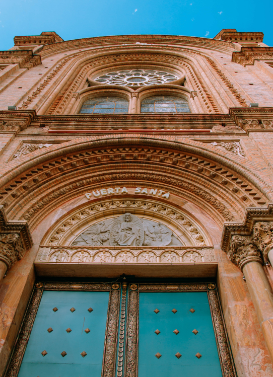

DESTINOS POPULARES - AZUAY
01.
CUENCA
La capital de la provincia y la tercera
ciudad más grande de Ecuador, Cuenca es famosa por
su impresionante arquitectura colonial. El
centro histórico de Cuenca ha sido declarado
Patrimonio de la Humanidad por la UNESCO, y
cuenta con iglesias, plazas y calles empedradas que
reflejan la herencia cultural
de la región.
¿Qué puedes hacer en Cuenca?
02.
PARQUE NACIONAL EL CAJAS, CUENCA
El Parque Nacional Cajas es una reserva
natural ubicada en la provincia de Azuay, en
el sur de Ecuador creado en 1996, es
conocido por su impresionante paisaje de
páramos, lagunas glaciares, bosques y
valles. Se encuentra a unos 30 kilómetros al
oeste de la ciudad de Cuenca y abarca una
extensión de aproximadamente 285
kilómetros cuadrados.
¿Qué puedes hacer en Parque Nacional El Cajas?
03.
LAGUNA DE BUSA, SAN FERNANDO
A tan solo 55 kilómetros de la ciudad de
Cuenca se encuentra ubicado la Laguna de
Busa un espectacular atractivo turísticos
del famoso cantón San Fernando. La Laguna
de Busa es un sitio turístico que debe
visitar, conoce sus atractivos turísticos, su
comida típica, deportes acuáticos,
caminatas, camping entre mucho más.
¿Qué puedes hacer en San Fernando?
04.
PARQUE ABDÓN CALDERON, CUENCA
El Parque Calderón es uno de los lugares
más emblemáticos y céntricos de la ciudad
de Cuenca, Ecuador, el Parque Calderón es
conocido por su diseño simétrico y elegante.
En el centro del parque se encuentra
una estatua del prócer de la independencia,
Abdón Calderón, a quien el parque debe su nombre.
¿Qué puedes hacer en el Parque Abdón Calderón?
05.
CASCO COLONIAL E IGLESIAS, CUENCA
El centro histórico de Cuenca, Ecuador, es un
sitio reconocido por la UNESCO como
Patrimonio Cultural de la Humanidad.
Esta área es famosa por su arquitectura
colonial bien conservada, calles empedradas
y un conjunto impresionante de iglesias y catedrales.
¿Qué puedes hacer en el Centro Histórico de Cuenca?
06.
RÍO SANTA BÁRBARA, GUALACEO
El río Santa Bárbara se encuentra en la
provincia de Azuay, cerca de la ciudad de
Gualaceo. Los alrededores del río Santa Bárbara
ofrecen un hermoso entorno natural.
Puedes encontrar bosques, áreas verdes
y senderos a lo largo de las riberas del río,
lo que hace que sea un lugar ideal para
disfrutar de la naturaleza y realizar actividades al aire libre.
¿Qué puedes hacer en el Río Santa Bárbara?

07.
VALLE DE YUNGILLA, SANTA ISABEL
El Valle de Yungilla es una hermosa región
ubicada en la provincia de Azuay, en el
cantón de Santa Isabel. El valle disfruta
de un clima templado, con temperaturas agradables
durante gran parte del año; puedes encontrar
colinas cubiertas de vegetación, áreas agrícolas,
ríos serpenteantes y pequeños pueblos que ofrecen
una auténtica experiencia rural.
¿Qué puedes hacer el Valle de Yungilla
08.
CASCADA EL CHORRO, GIRÓN
La Cascada El Chorro de Girón es una
hermosa cascada ubicada en la provincia de Azuay.
Está ubicado aproximadamente a unos
40 kilómetros al sur de la ciudad de Cuenca,
para llegar a la Cascada generalmente se debe realizar
una caminata. Suele ser exuberante y verde,
con bosques y vegetación que contribuyen
a la belleza del entorno.
¿Qué puedes hacer en el Chorro de Girón

09.
LA CUCHARA MÁS GRANDE DEL MUNDO, PAUTE
La cuchara gigante se encuentra en Paute,
en la provincia de Azuay. Paute es conocida
por su rica historia cultural y por ser un lugar
donde se produce artesanía tradicional.
Es una escultura artesanal hecha de madera y metal.
Se destaca por su tamaño inusualmente grande,
lo que la convierte en un atractivo turístico.
Mide 20,6 m. de largo y 5,06 m. de ancho.
¿Qué puedes hacer en Paute?
10.
COMPLEJO ARQUELÓGICO CHOBSHI, SÍGSIG
Chobshi está ubicado en la parroquia
de Chobshi, que pertenece al cantón Sígsig,
en la provincia de Azuay. El complejo arqueológico
Chobshi data de la época preincaica, y las
evidencias sugieren que fue ocupado por diferentes
culturas, incluyendo la Cañari y la Inca.
Se cree que la ocupación del lugar abarca desde el 2500 a.C.
hasta la llegada de los españoles en el siglo XVI.
¿Qué puedes hacer en el Complejo Arquelógico Chobshi?